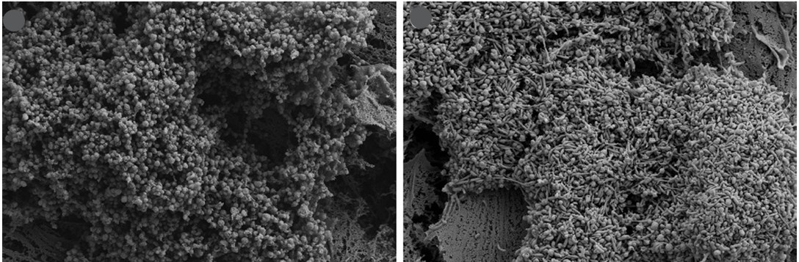

Mycoplasmas are a group of bacteria, often pathogenic, with unusual features compared to other bacteria. They are bounded only by a single membrane with no cell wall, have genomes at least 10 times smaller than model bacteria like E. coli, and possess the smallest genomes among organisms that can be cultured independently.
In the Balish Mycoplasmology Lab, graduate and undergraduate students perform experiments using diverse cell biological, molecular biological, and biochemical techniques to ask significant questions about mycoplasmas, focusing on species that are frank or opportunistic pathogens of humans.

Mycoplasma pneumoniae biofilm structures
Some important species that infect humans, like the respiratory pathogen Mycoplasma pneumoniae and the sexually transmitted pathogens Mycoplasma genitalium and Mycoplasma penetrans, rely on prominent polar protrusions called attachment organelles for adherence to host cells and movement along surfaces.
These structures are undergirded by novel cytoskeletal proteins found only in mycoplasmas, frustrating efforts to understand these proteins through comparison with model organisms. Remarkably, different groups of mycoplasmas use entirely different proteins to create these structures and fundamentally different mechanisms to power motility, suggesting convergent evolution of attachment organelles.
Student projects focus on: How the components of attachment organelles specifically function in architecture, motility, and virulence-related properties of these structures.
Biofilms are aggregates of single-celled organisms that occur naturally and confer protection from host defenses, antibiotics, and fluctuations in environmental conditions. When M. pneumoniae cells form biofilm structures, which we suspect are important in chronic disease caused by this organism, they reduce production of several molecules associated with virulence, including hydrogen peroxide, hydrogen sulfide, and the ADP-ribosylating CARDS toxin.
The mechanisms by which M. pneumoniae carries out this regulation is entirely unknown.
Student projects focus on: Testing hypotheses about the mechanism of virulence factor regulation and understanding biofilm formation in M. pneumoniae and other mycoplasma species.
Different mycoplasma species interact with host cells in different ways. M. pneumoniae, for example, is almost certainly an exclusively extracellular pathogen, whereas M. penetrans is named for its ability to invade cells.
Although important aspects of the progression and features of infection of host cells have been characterized, some important gaps in knowledge remain. In the case of M. pneumoniae, there is little information about the impact of biofilm structures on host cells. For M. penetrans, most work has been done with cell types whose relevance to infection is marginal.
Student projects focus on: Investigating the effects of these pathogenic bacteria on appropriate host cells.
Bacteria generally utilize the process of cell wall synthesis to enable cells to divide, but mycoplasmas have no cell walls. Mycoplasmas that have attachment organelles typically use the force of motility to help separate cells. But most mycoplasma species, including a large number of important pathogens of animals and humans, do not have attachment organelles, leaving their mechanism for cell division a mystery.
These bacteria undergo an array of changes in shape and organization during the process of division, but these changes are not well-characterized.
Student projects focus on: Understanding the sequence of events and the processes that occur during cell division of mycoplasmas that lack attachment organelles.
It is important to study these organisms because many of them are highly prevalent, the infections they cause are long-lasting, there are no vaccines available, and antibiotic resistance is rising and is dangerously high in some parts of the world.
Understanding what mycoplasmas do during infection and disease, and ultimately how they do these things, could provide critical information that leads to the development of new therapeutic agents that will improve the lives of millions of people each year who suffer from chronic infection with mycoplasmas.